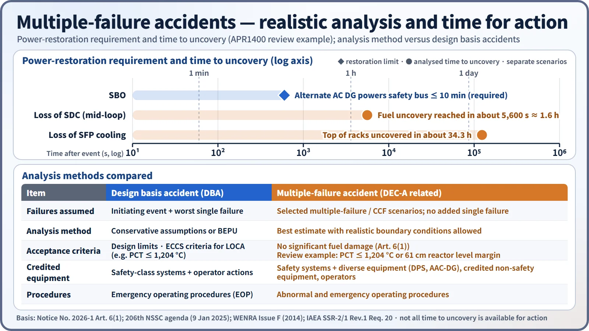

Accidents, Safety Analysis & Severe Accidents · C-SA-017
Multiple-Failure Accidents — Loss of a Safety Function Beyond a Single Failure, the Nine Mandatory Scenarios and DEC-A
When two or more components fail and a safety function is lost: the nine mandatory scenarios and how significant fuel damage is shown to be prevented.
A multiple failure, as defined in Article 2(1)15 of Korea's "Rule on the Technical Standards for Nuclear Reactor Facilities", is "the loss of the capability to perform a safety function because failures occur in two or more components, exceeding a single failure". Accidents caused by multiple failures are one of the four categories within the scope of accident management (Article 85-19(1)2), and the assessment checks whether significant fuel damage is prevented for the nine mandatory accidents in Annex 1 of NSSC Notice No. 2026-1 plus additional accidents selected by PSA.
In the international framework they correspond to design extension conditions without core damage (DEC-A), level 3b of defence in depth.
Principle and mechanism
How it differs from a single failure
A single failure, defined in item 11 of the same article, is "a failure in which one component loses its capability to perform its intended safety function", and it includes any failures that follow as a consequence of it. Design basis accident analysis adds the worst single failure to the initiating event and checks that the safety systems cope.
A multiple failure goes beyond that assumption: a safety function or a pressure boundary is lost. There are three causes:
- two or more independent failures coinciding;
- common-cause failure (CCF): the same design, manufacturing or maintenance defect disabling redundant trains at once;
- simultaneous loss from an external hazard beyond the design basis (handled as a separate item among the four scope categories).
Meeting the single-failure criterion does not guarantee tolerance of CCF. That is why coping with multiple failures relies mainly on diverse equipment (the diverse protection system DPS, the alternate AC diesel generator, mobile equipment) together with procedures and operator actions.
The nine mandatory accidents — what is lost in each
Article 3 of the Notice states only that "accidents caused by multiple failures are as listed in Annex 1" and leaves the definition to Article 2 of the Rule.
| No. | Annex 1 accident | Function or boundary lost or damaged |
|---|---|---|
| ① | Anticipated transient without scram (ATWS) | Reactor trip (control rod insertion) |
| ② | Station blackout (SBO) | Off-site power + emergency diesels |
| ③ | Multiple steam generator tube rupture | Primary/secondary pressure boundary |
| ④ | Total loss of feedwater | Main and auxiliary feedwater |
| ⑤ | Interfacing-systems LOCA (ISLOCA) | High/low-pressure interface boundary (containment bypass) |
| ⑥ | Loss of shutdown cooling | Decay-heat removal during shutdown |
| ⑦ | Loss of ultimate heat sink | Seawater heat removal along the normal path |
| ⑧ | Small LOCA + loss of safety injection or recirculation | Coolant inventory make-up |
| ⑨ | Loss of spent fuel pool cooling | Pool cooling |
![Cutaway plant sketch with numbered pins 1 to 9 marking the reactor building, steam generators, pumps, diesel generator, spent fuel pool and seawater intake, flanked by nine cards: ATWS with RCS maximum 17.59 MPa(g) below 22.06 MPa(g); SBO with the alternate AC diesel powering the safety bus within 10 minutes; multiple SG tube rupture with 5 tubes reaching shutdown cooling entry at 177 °C and 3.10 MPa(a); total loss of feedwater handled by feed and bleed; ISLOCA prevented; loss of shutdown cooling with fuel uncovery in about 5,600 s; loss of ultimate heat sink with hot shutdown maintained; small LOCA plus loss of safety injection; and loss of spent fuel pool cooling with top of racks uncovered in about 34.3 h](../../assets/images/concepts/c-sa-017-multiple-failure-accidents/fig1-nine-scenarios-map.webp)
Additional accidents — selected by PSA
Besides the nine mandatory accidents, Annex 1 requires consideration of "accidents assessed, through probabilistic safety assessment and the like, as having a likelihood and consequences similar to the mandatory accidents". No fixed frequency cut-off is set. The unit-specific PSA is searched for multiple-failure sequences that contribute strongly to core damage frequency, and these are compared with the mandatory accidents.
A comparison with the example DEC-A list in the WENRA Issue F guidance (2014) shows why this selection matters. ATWS, long-term SBO, total loss of feedwater, LOCA + loss of one emergency core cooling function, loss of core cooling in residual-heat-removal mode, long-term loss of pool cooling, multiple SG tube rupture and loss of the ultimate heat sink overlap with the nine South Korean accidents. On the other hand, uncontrolled boron dilution, total loss of the component cooling water system and long-term loss of safety systems after a DBA are not on the South Korean mandatory list, so they are candidates for the PSA-based additional review. Conversely, the South Korean list explicitly includes ISLOCA, which is not among the WENRA examples.
What it means in a plant
Acceptance criterion — the prevention stage
Article 6(1) of the Notice states that "the reactor facility shall ensure that significant damage to the fuel in the reactor or in the spent fuel storage facility does not occur as a result of accidents caused by multiple failures". The 2019 exam's "purpose of the severe accident prevention stage" is exactly this article. Multiple-failure accidents are also subject to the Article 8 consequence assessment (effective dose at the exclusion area boundary and at the outer boundary of the low population zone each 250 mSv or less).
The APR1400 review (approved by the NSSC on 9 January 2025) made this goal concrete as "fuel cooling function maintained, or peak cladding temperature 1,204 °C or below" (applying Article 3(1) of the ECCS performance criteria notice), and, as a level criterion, "reactor water level margin of 61 cm maintained". The 1,204 °C value is how the review applied the goal; the wording of the Notice is "no significant damage".
How the analysis differs
The WENRA guidance summarizes the difference between DBA and DEC as follows:
- DBA: conservative assumptions or BEPU, plus additional assumptions such as a single failure;
- DEC: best-estimate analysis (with or without uncertainty) is allowed and in some cases preferred, no systematic additional assumptions such as a single failure, and more realistic acceptance criteria.
Allowing best-estimate analysis does not mean abandoning all conservatism. Looking at uncertainty as well is recommended so that the results are meaningful for planning.
IAEA SSR-2/1 Rev.1, Requirement 20, also requires that DECs be derived from engineering judgement and deterministic and probabilistic assessment, and that equipment for DECs be independent of design basis equipment as far as practicable. The IAEA requirements, however, do not use the labels "DEC-A/B"; they speak of "conditions without significant fuel degradation" and "conditions with core melting".

APR1400 review results — countermeasures and numbers
| Accident | Countermeasure / action | Result |
|---|---|---|
| ATWS | Assessment including DPS | RCS maximum 17.59 MPa(g) ≤ KEPIC MN Class C 22.06 MPa(g) |
| SBO | Alternate AC DG | Ability to supply power within 10 minutes demonstrated by test (a design and review criterion, not a mandatory recovery deadline) |
| Multiple SG tube rupture | Rupture of 5 tubes assumed; faulted SG isolated | Shutdown cooling entry conditions (177 °C, 3.10 MPa(a)) reached |
| Total loss of feedwater | RCP trip, RCS depressurization + feed & bleed | Significant damage prevented |
| ISLOCA | Design reinforced for overpressure relief of connected piping, main control room indication and alarms, isolation-valve leak tests | Occurrence of the accident itself prevented |
| Loss of shutdown cooling | Assumed during mid-loop operation (hot-leg mid level); time margin assessed | Fuel uncovery reached in about 5,600 s |
| Loss of ultimate heat sink | SG feed and steam release; four alternate water sources | Hot shutdown maintained |
| SBLOCA + loss of safety injection | RCP trip, manual opening of the main steam atmospheric dump valves, shutdown cooling operation | Significant damage prevented |
| Loss of pool cooling | Normal minimum level EL 46.9 m → top of racks EL 39.5 m | Uncovery reached in about 34.3 hours |
The strategies are reflected in the abnormal operating procedures and the emergency operating procedures. Feed & bleed in the total-loss-of-feedwater case uses the safety depressurization system, and ATWS uses the DPS. These values are results for a specific unit and specific assessment conditions. Not all of the time to uncovery is available for action; the question is whether margin remains after subtracting detection and decision time. The public agenda does not give a separate result for the "loss of recirculation" part of Annex item ⑧. The 5,600 s for loss of shutdown cooling is the South Korean review's value for mid-loop operation (hot-leg mid level); the shutdown PSA table in the US design certification gives 4,582 s for mid-loop and 5,599 s for a level at the top of the hot leg, under different assumptions, so the two should not be compared directly.
Regulatory basis
| Basis | Key point |
|---|---|
| Technical Standards Rule (NSSC Rule No. 37, 30 March 2026), Article 2(1) items 11 and 15 | Definitions of single failure and multiple failure |
| Same Rule, Article 85-19(1)2 and (2) | Multiple-failure accidents within the scope of accident management; details of selection in a Notice |
| Same Rule, Article 85-22 | Assessment by deterministic and probabilistic methods |
| NSSC Notice No. 2026-1, Article 3 and Annex 1, Article 6(1), Article 8 | Nine mandatory + additional accidents; prevention of significant damage; 250 mSv |
| IAEA SSR-2/1 Rev.1 (2016), Requirement 20 | Derivation of design extension conditions and independence of equipment |
| WENRA RL Issue F (2014) and the 2013 report on new NPP designs | DEC A/B categories, 3a/3b split, analysis methods |
The Notice's history is No. 2016-2 (enacted 30 June 2016) → No. 2017-34 (26 December 2017) → No. 2026-1 (16 January 2026). Compared with when the questions were set (2019–2026), the nine accidents in Annex 1 are unchanged. Article 6(1) gained the words "by securing accident management equipment, strategies and implementation arrangements". Other changes are the renumbering of the threat table (Annex 2 → 3), the plant states for external hazards (new Annex 2) and the explicit dose criterion in Article 8. The United States has no "multiple-failure accident" grouping; it regulates the cases individually in 10 CFR 50.62 (ATWS), 50.63 (SBO) and 50.155 (mitigation of beyond-design-basis events).
Easily confused pairs
| Design basis accident (DBA) | Multiple-failure accident | Severe accident | |
|---|---|---|---|
| Failure assumption | Initiating event + single failure | Loss of function from two or more components or CCF | Significant core damage |
| International category | DBA, level 3 (3a) | DEC-A, 3b (WENRA) | DEC-B, level 4 |
| Analysis | Conservative or BEPU | Best estimate, realistic | Best estimate |
| Goal | Design limits, ECCS criteria | Prevent significant fuel damage | Keep the containment barrier |
| Implementing document | EOP | Abnormal and emergency operating procedures | SAMG |
Three common mistakes: putting "hydrogen explosion" or "MCCI" among the nine mixes them up with the threats after significant core damage (Annex 3). The item is "small LOCA + loss of safety injection or recirculation", not "large LOCA". And it is "multiple tube rupture", not "SGTR" — and the spent fuel pool cooling item must not be left out.
Key points at a glance
- Definition: loss of the capability to perform a safety function through failures of two or more components, exceeding a single failure (Technical Standards Rule, Art. 2, item 15).
- Position: item 2 of the four accident-management scope categories (Art. 85-19); related to DEC-A, defence-in-depth level 3b (WENRA).
- Causes: coinciding independent failures, common-cause failure → coped with by diverse equipment.
- Nine mandatory (Notice No. 2026-1, Annex 1): ATWS, SBO, multiple SG tube rupture, total loss of feedwater, ISLOCA, loss of shutdown cooling, loss of ultimate heat sink, SBLOCA + loss of SI or recirculation, loss of SFP cooling.
- Additional: accidents assessed by PSA as having likelihood and consequences similar to the mandatory ones.
- Acceptance: no significant damage to fuel in the reactor or SFP (Art. 6(1)); consequence assessment 250 mSv (Art. 8).
- Analysis: best estimate, realistic assumptions, no additional single failure.
- Implementation: abnormal and emergency operating procedures; DPS, AAC-DG, feed & bleed.
- APR1400 example: ATWS 17.59 / 22.06 MPa, 5 SG tubes ruptured, AAC 10 minutes, SFP 34.3 h.

This is a model answer, not an official solution. It reflects the criteria current as of 2026.
Exam relevance
Multiple-failure accidents have appeared four times in the Korean Professional Engineer (Nuclear Power) exam: 2019 exam, session 2, Q4 (the purpose of the severe accident prevention stage in the accident management plan, with the mandatory multiple-failure accidents and extreme hazards); 2021 exam, session 2, Q2 (definition, the nine mandatory accidents and the additional accidents); 2025 exam, session 4, Q2 (the nine types of multiple-failure accident considered in the accident management plan); and 2026 exam, session 4, Q4 (mandatory and additional multiple-failure accidents together with the mandatory and additional threats after significant core damage). All are descriptive questions, and listing the nine accidents correctly is the core of every answer: write "small LOCA + loss of safety injection or recirculation" and "multiple SG tube rupture" exactly, do not forget the spent fuel pool, and keep the post-core-damage threats (hydrogen, MCCI) in a separate list.